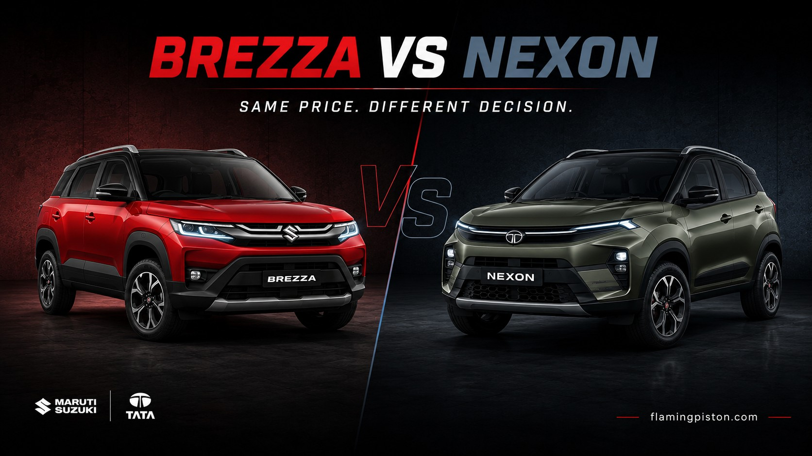

2026 Maruti Brezza vs Tata Nexon: Price, Mileage, Safety and Which to Buy

AI illustration: FlamingPiston
Published Aug 14, 2026 · Updated Nov 23, 2026
8 min read
Category: Compact SUVs
The Tata Nexon gives you more choice: petrol, diesel and CNG, with manual, AMT and dual-clutch automatic gearboxes, and it starts slightly cheaper. The Maruti Brezza has the better claimed petrol and CNG mileage, keeps its full boot on CNG and tops out ₹64,000–76,000 lower. Neither wins outright. The right choice depends on which fuel you want, whether you need an automatic, and how much you plan to spend. Prices and specifications below are for the cars on sale in India in November 2026.
Quick verdict
- Want a diesel? Only the Nexon has one.
- Want an automatic on a budget? The Nexon AMT starts at ₹8.92 lakh; the cheapest Brezza automatic is ₹10.61 lakh.
- Want the best petrol or CNG efficiency? The Brezza’s claimed figures are higher.
- Want CNG with the bigger boot? Brezza: 328 litres vs 321, but it has no spare wheel.
- Want a panoramic sunroof or ADAS? Only the Nexon offers them.
Price comparison
Ex-showroom prices as listed on 23 November 2026. Maruti raised Brezza prices by up to ₹5,000 that day, and the Nexon’s top price differs by up to ₹12,000 between listings.
| Powertrain | Maruti Brezza | Tata Nexon |
|---|---|---|
| Whole range | ₹7.55–13.76 lakh | ₹7.40–14.40/14.52 lakh |
| Petrol, manual | ₹7.55–11.47 lakh (1.0 turbo); ₹8.40–10.76 lakh (1.5) | ₹7.40–12.72 lakh |
| Petrol, automatic | ₹10.61–13.76 lakh (1.5, torque converter) | ₹8.92–14.07 lakh (AMT or DCT) |
| Diesel | Not offered | ₹9.27–13.87 lakh (manual); ₹10.87–14.42 lakh (AMT) |
| CNG (manual only) | ₹9.45–11.81 lakh | ₹8.35–13.72 lakh |
The Nexon is about ₹15,000 cheaper at the entry point and much cheaper if you want a two-pedal car: its AMT starts ₹1.69 lakh below the cheapest Brezza automatic. Its CNG also starts ₹1.10 lakh lower and is offered in many more variants. The Brezza’s range ends at ₹13.76 lakh, below the most expensive Nexons. In the Brezza, the 1.0 turbo-petrol is the cheaper engine in every trim. For trim-by-trim detail, see our Brezza variants guide.
Engines and gearboxes
| Engine | Power / torque | Gearboxes |
|---|---|---|
| Brezza 1.0 turbo-petrol | 110 PS / 170 Nm | 6-speed manual |
| Brezza 1.5 petrol | 103 PS / 139 Nm | 6-speed manual, 6-speed automatic |
| Brezza 1.5 CNG | 88 PS / 121.5 Nm (on CNG) | 6-speed manual |
| Nexon 1.2 turbo-petrol | 120 PS / 170 Nm | 5-speed manual (base Smart), 6-speed manual, AMT, 7-speed DCT |
| Nexon 1.5 diesel | About 115 PS / 260 Nm | 6-speed manual, AMT |
| Nexon 1.2 turbo CNG | 100 PS / 170 Nm (on CNG) | 6-speed manual |
The Nexon has more power and torque in every fuel, and its diesel has the most torque of any engine here. Both cars are front-wheel drive.
On the road, Autocar India found the Brezza’s turbo smooth, with a light clutch, though short of outright punch; it recorded 0–100 km/h in 12.36 seconds. The Brezza’s automatic is a conventional torque converter. V3Cars found the Nexon’s dual-clutch automatic smooth, its diesel audible but smooth, and its ride composed, with some body roll. We have not driven either car for this comparison.
Mileage and running costs
| Fuel | Brezza, claimed | Nexon, claimed |
|---|---|---|
| Petrol, manual | 19.96–21.09 km/l | 17.44 km/l |
| Petrol, automatic | 20.17 km/l | 17.18 km/l (AMT), 17.01 km/l (DCT) |
| Diesel | Not offered | 23.23 km/l (manual), 24.08 km/l (AMT) |
| CNG | 26.90 km/kg | About 24 km/kg (reported) |
On petrol, the Brezza’s claims are 3–4 km/l higher. On CNG it also leads; the Nexon CNG’s figure is reported by Autocar India and V3Cars, but CarWale says Tata has not published one, so treat it as approximate. The Nexon diesel has the highest claimed figure of any liquid-fuel version.
Independent tests tell a less tidy story. Autocar India’s long-term Brezza Turbo showed 12.1 km/l at 1,200 km. V3Cars recorded 12.66 km/l from a Nexon petrol DCT on a highway-heavy drive, and 15.82 km/l (city) and 21.61 km/l (highway) from a Nexon diesel manual. These were different cars on different routes, so they don’t settle which petrol is more efficient, but they do show the diesel’s real-world advantage for high-mileage drivers. No independent test of the Brezza 1.5 or either car’s CNG version has been published. Our Brezza mileage guide has the full Brezza figures and the cost per km.
Size, boot and practicality
| Dimension | Maruti Brezza | Tata Nexon |
|---|---|---|
| Length | 3,995 mm | 3,995 mm |
| Width | 1,790 mm | 1,804 mm |
| Height | 1,685 mm | 1,620 mm |
| Wheelbase | 2,500 mm | 2,498 mm |
| Ground clearance | 198 mm (as listed by V3Cars) | 208 mm (unladen) |
| Boot, petrol / diesel | 328 litres | 382 litres |
| Boot, CNG | 328 litres | 321 litres |
| Spare wheel | None (repair kit) | CNG: space-saver under the car |
| Petrol tank | 48 litres | 44 litres |
The two cars are the same length with almost the same wheelbase. The Brezza is 65 mm taller; the Nexon is slightly wider and has the higher quoted ground clearance. Maruti does not publish a ground-clearance figure in the Brezza brochure.
The petrol and diesel Nexon has the bigger boot. With CNG the order flips, because the Nexon’s twin cylinders sit under its boot floor while the Brezza’s tank is under the car. The Brezza pays for that with no spare wheel on any version. Our Brezza boot-space guide has the details.
In the back, Autocar India rates the Brezza as one of the few compact SUVs that can seat three adults abreast in comfort. V3Cars found the Nexon’s rear kneeroom just enough behind a 5ft 8in driver, with good under-thigh support but a darker, less airy feel because of the sloping roofline.
Features and technology
| Feature | Maruti Brezza | Tata Nexon |
|---|---|---|
| Sunroof | Single-pane, ZXi and ZXi+ | Panoramic, from Pure+ PS (₹9.72 lakh) |
| 360-degree camera | ZXi+ only | From Creative |
| Driver display | Analogue dials; head-up display on ZXi+ | Digital; 10.25-inch on top trims, with a 10.25-inch touchscreen |
| Ventilated front seats | ZXi+ only | Higher trims |
| Driver assistance | No ADAS; blind-spot warning and rear cross-traffic alert (ZXi turbo, ZXi+) | Level 1 ADAS on Fearless+ A PS DCT only |
The Nexon offers more technology lower down the range: a panoramic sunroof under ₹10 lakh and a 360-degree camera from the mid-level Creative trim. In the Brezza, the camera, head-up display and ventilated seats are all reserved for the ₹11.31 lakh-plus ZXi+. Neither car offers ADAS below its top automatic or top trim, and the Brezza has none at all. V3Cars notes that the Nexon uses touch-sensitive controls for several functions, which are harder to use on the move than buttons.
Safety
| Bharat NCAP | Maruti Brezza | Tata Nexon |
|---|---|---|
| Rating | 5 stars (July 2026) | 5 stars (October 2024) |
| Adult occupant | 30.41 / 32 | 29.41 / 32 |
| Child occupant | 43.00 / 49 | 43.83 / 49 |
| Rating covers | Petrol and turbo-petrol | Petrol and diesel |
| CNG versions | Not covered | Not covered |
Both cars have five-star Bharat NCAP ratings under the same protocol, with near-identical scores: the Brezza slightly ahead for adults, the Nexon slightly ahead for children. Six airbags and electronic stability control are standard on both. Neither rating applies to the CNG versions, which Bharat NCAP has not listed for either car. More detail is in our Brezza safety guide.
Ownership
Both carry a standard warranty of 3 years or 1,00,000 km. Running costs depend mostly on the fuel you choose: on claimed figures the Brezza petrol and CNG use less fuel than the Nexon petrol and CNG, while the Nexon diesel suits long daily distances. For servicing estimates, see our Brezza maintenance cost guide. We have not included resale values because we have no reliable published data to compare.
Which SUV should you buy?
Choose the Brezza if
- You want the best claimed petrol or CNG efficiency of the two.
- You want CNG and the larger CNG boot, and can live without a spare wheel.
- You often carry three adults in the back.
- You want an automatic with a conventional torque converter and your budget starts at about ₹10.6 lakh.
Choose the Nexon if
- You drive long distances and want a diesel.
- You want an automatic for under ₹10 lakh, or a dual-clutch automatic.
- You want a panoramic sunroof, 360-degree camera or ADAS without buying the top trim (ADAS needs the top DCT).
- You want the bigger boot in a petrol or diesel car, or a spare wheel with CNG.
For more on the Brezza alone, read our 2026 Brezza review. Weighing Maruti’s own alternative? See Brezza vs Fronx.
What Owners Say
The facelifted Brezza went on sale in July 2026, so owner reports are still early and most cover under 2,000 km. On 23 November 2026 we read owner posts on Team-BHP, CarWale and CarDekho, leaving out test drives, posts about the older model, duplicate reviews and anyone who had not bought or driven the car. These are owners’ experiences, not measured results; we say how many owners each point rests on. For the Nexon, we read the owner reviews on CarWale.
- Brezza: comfort, and a turbo that is easy to drive. At least seven Brezza owners across three sites praise the comfort, and six turbo owners find the engine easy in traffic.
- Brezza: plain interior. One CarWale Brezza owner says its interior is well behind rivals including the Nexon; another calls it not modern but durable.
- Nexon: comfort, build and features. Five Nexon owners on CarWale praise its ride, build quality and features. One, at about 1,200 km, reports around 15 km/l.
Owners of both cars are broadly satisfied. Their comments back our split: the Brezza for space and easy driving, the Nexon for features and cabin feel.
FAQs
Does the Maruti Brezza have a diesel engine?
No. The 2026 Brezza comes with a 1.0 turbo-petrol, a 1.5 petrol and a 1.5 CNG. If you want a diesel, the Tata Nexon offers a 1.5-litre diesel with a manual or AMT gearbox, from ₹9.27 lakh ex-showroom.
Which is cheaper, the Brezza or the Nexon?
The Nexon starts slightly lower, at ₹7.40 lakh against ₹7.55 lakh for the Brezza (ex-showroom, November 2026). The Brezza tops out lower, at ₹13.76 lakh against ₹14.40 to 14.52 lakh. The Nexon’s cheapest automatic, at ₹8.92 lakh, costs ₹1.69 lakh less than the cheapest Brezza automatic.
Which has better mileage, the Brezza or the Nexon?
On claimed figures, the Brezza petrol (19.96 to 21.09 km/l) beats the Nexon petrol (17.01 to 17.44 km/l), and the Brezza CNG (26.90 km/kg) beats the roughly 24 km/kg reported for the Nexon CNG. The Nexon diesel is rated at 23.23 to 24.08 km/l, and V3Cars recorded 21.61 km/l from it on the highway.
Which is safer, the Brezza or the Nexon?
Both have five-star Bharat NCAP ratings. The Brezza scored 30.41/32 for adults and 43/49 for children; the Nexon scored 29.41/32 and 43.83/49. Both have six airbags and stability control as standard. Neither rating covers the CNG versions.
Which has more boot space, the Brezza or the Nexon?
The petrol and diesel Nexon has 382 litres against the Brezza’s 328. With CNG the Brezza keeps 328 litres while the Nexon CNG has 321, but the Brezza has no spare wheel on any version.
Figures checked 23 November 2026 against Maruti Suzuki’s Brezza brochure, Bharat NCAP, Autocar India, CarDekho, CarWale and V3Cars. Tata’s own site could not be reached, so Nexon figures rest on these publications. Driving impressions are other publications’ and are attributed.
More in the Brezza series: Full Review · Real-World Mileage · Variants Explained · Automatic Review · CNG Review · Turbo vs 1.5 Petrol · Maintenance Cost · Boot Space · Safety & NCAP · Pros & Cons · vs Fronx · vs XUV 3XO CNG
Sources
- Maruti Suzuki: New Brezza brochure, specifications and features by variant (official, PDF)
- Bharat NCAP: Maruti Brezza rating (official)
- Bharat NCAP: Tata Nexon rating (official)
- Autocar India: Tata Nexon specifications
- Autocar India: Tata Nexon
- Autocar India: Tata Nexon CNG review
- Autocar India: Maruti Brezza specifications
- Autocar India: 2026 Maruti Suzuki Brezza facelift review
- Autocar India: Brezza Turbo long-term review, first report
- CarDekho: Tata Nexon prices and variants
- CarDekho: Maruti Brezza prices and variants
- CarWale: Tata Nexon
- CarWale: Maruti Brezza
- V3Cars: Tata Nexon prices, review and test figures
- V3Cars: Maruti Brezza prices and specifications
Owner discussions
- Team-BHP: 2026 Maruti Suzuki Brezza facelift review, owner posts
- CarWale: Maruti Brezza owner reviews
- CarDekho: Maruti Brezza user reviews
- CarWale: Tata Nexon owner reviews
Links checked 23 November 2026. Test figures and driving impressions are other publications’ and are attributed in the text. Owner reports were read on 23 November 2026; we do not show usernames.